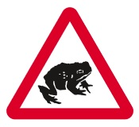
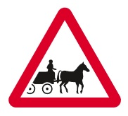
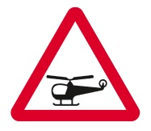
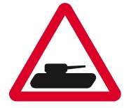
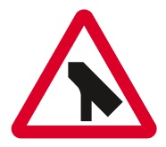
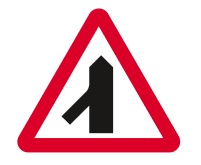

|
 previous / next column previous / next column
A PHYSICIST WRITES . . .
(May 2015)
Let me continue a topic from my column last month [in the Thames Valley Group Newsletter], namely traffic signs, which I do like to think I pay good attention to. I described an alarming evening journey from Hartley Wintney towards Reading: our car was suddenly surrounded by a herd of deer who were evidently under the impression that they had the right of way in crossing the road, at a speed not far short of ours along it. Later, on the internet in Google Street View, I scanned along the road and there, just outside the village, was a red-triangle deer-warning sign. But I had no memory of having seen it in the flesh (or do I mean in the metal?)...
Well, a few days ago we happened to take the same route in the same direction, this time in daylight (though I still had a feeling of trepidation as we drove through Hartley Wintney). The deer-sign came into view - and then so did another, and another, and another: four signs warning of deer, in the space of half a mile or so! I think this confirms the theory I offered last month, which was that my subconscious brain had dismissed such signs as irrelevant, probably because I had never previously encountered deer while on a road or anywhere near one.
Since then, of course, every deer sign that I've passed has rung alarm bells in my head nearly loud enough for Mrs S to hear in the passenger seat. Also, I have been wondering which other signs I might similarly be ignoring, by looking at them but not taking them in. So I skimmed through my copy of Know Your Traffic Signs, and with some relief I think I can safely say that no other red-triangle signs would normally escape me in this way: they all seem either relevant to what I'm likely to meet beyond them, or else so improbable that if I ever passed one, I would very likely stop and go back for another look!

In the latter (improbable) category were just four signs. Would you instantly identify the shape in this first one as a migratory toad? Do we really have such species in the UK anyway? To my astonishment (after a little research), the answer is yes, we do. Though it seems to me that you would need to slow almost to a standstill to have any chance of avoiding them in a swarm (or rather, a knot, which I've discovered is their collective name).
And I now know of at least one road that is closed off for some weeks every spring to protect them: it's in Richmond (London), would you believe, where the toads 'migrate' 350 yards from Richmond Park to a pond on Ham Common (and presumably back again). But I don't understand the point of any permanent sign that warns us all the time of a problem that exists only for a few weeks in the year. It's like (or perhaps even sillier than) placing an icy-road sign where there's a frost-pocket only in cold winters.

This horse-drawn vehicles sign is another puzzle: is it intended to indicate the exit from a stables that has such carriages? Or maybe to warn you that you are approaching a stretch of road on which they are likely to be driven? I've no idea, never having seen the sign anywhere! I do recall that carriages are raced at horse shows - but will they fit into a lorry, or do they have to be horse-drawn all the way there? If it's the latter then I suppose you might meet them anywhere, so again a fixed sign seems to have little usefulness.

The next in this set of signs that I've never met is potentially the most helpful, warning you of "low-flying helicopters or sudden helicopter noise" (according to the book). But surely this is only a risk if they are taking off or landing close to the road. I can't really believe that a heliport would be located near enough to traffic for there to be any danger of an accident, or even just alarm, being caused in this way (and hence requiring a warning).

I think this sign is the most frightening in the book: its meaning is "slow-moving military vehicles likely to be in or crossing the road". That's heavy stuff, then, not the fast-moving convoy of green-camouflaged trucks that you sometimes see. But firstly, won't you already have received plenty of hints of military might as you approached the area, whether it's a large army camp or a training ground? And secondly, if the sign was in any location other than these two, wouldn't it be giving away valuable information to the enemy? Or perhaps I've been watching Dad's Army too much...
It has only just occurred to me to see if I can find any of the above four signs actually on a road, with Google Image Search. I've located a migratory-toads sign in Derbyshire, and another one with the relevant months displayed below it (which makes rather more sense) in Cumbria. The helicopter sign can be seen, not surprisingly I guess, on the road approaching the Helicopter Museum near Weston-super-Mare! And there's a military-vehicles sign in or near the village of Redmire, N Yorks, though maybe I shouldn't be drawing attention to it.

Before you read on, think where you would expect to find this much more familiar warning-triangle, and then I'll tell you a story about it. Yes of course: you see it on a slip-road (or similar) that's about to merge with a major road. In 2013, while on my way to look at a VW Golf in Twickenham, I noticed the sign on the A316, but something seemed amiss. Then the penny dropped: I was on a main road already, in fact on a flyover above a big roundabout junction!
A week later (going to trade in my Toyota Corolla and collect the Golf) I checked again, and reassured myself that it was the wrong sign. How - and how long ago - was such a mistake made? On the other hand, how did even a keen eye (for traffic signs) like mine then spot it? Anyway, I reported it to the local authority, they agreed with me that the sign was erroneous, and I hope the flyover now carries this correct one:-

Peter Soul
previous / next column
|